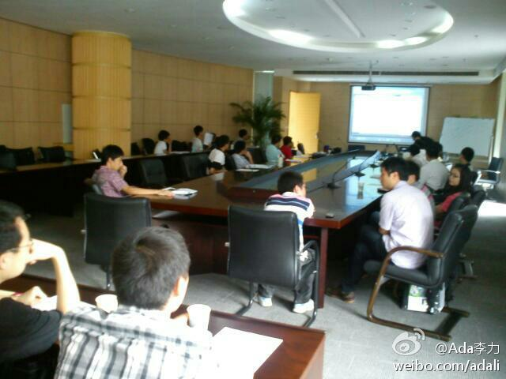

7月23日下午在成都天府软件园A3，1楼大会议室. 成都软件技术沙龙－JDK 7 与 Mobile Widget 网页链接 //@黄荣叔叔V:什么活动？@Ada李力:上午快十点了，成都还在下雨。今天下午的活动会受多大影响？
这次成都技术沙龙，我讲了JDK 7，Oracle技术，另两个话题是Google的Andoid , Microsoft 的Kinet 。也只有第三方中立型的技术活动上能看到这么多样性的技术话题组合。 
回复 @遥控人:检讨，还得努力把语速降下来。 //@遥控人:今天听了你的讲座，受益匪浅，你语速较快，我跟的有点吃力，呵呵！@Ada李力:张凌华在成都技术沙龙上讲"Mobile Widget".他也是逃离北上广一族，说综合评估工作与生活，成都还是最适宜的地方。
成都当地的技术社区人士要经常一起腐败, 能听到很多有趣的事情. [呵呵]@Huihoo:感谢 @Ada李力 和 @亿科朱永光 专程驱车来温江相聚，大家聊得很开心，我吃得很饱。对了，我和Ada的头像都是几年前的，她变化不大，我变化却有些大，哈。
针对架构师的大会也有了. 看起来, 演讲嘉宾绝大多数还是来自互联网. //@唐川-草上飞2008：9月9号的第三届系统架构师大会的演讲嘉宾基本齐了，大家看看，帮忙转转啊2015第七届中国系统架构师大会官网 - IT168 - 原文地址：网页链接 [原文地址：网页链接 ]
据我所知, Google也是自己招聘, 不接受猎头推荐. //@甲骨文杨姝:回复@登山射手座:因为这个模式O公司2006年就开始摸索了，有很好的结构和体系了，而且这是一个全球化的模式结构，到目前为止没有一个公司能象O公司这样大胆改革创新。所以O公司绝对选择职业发展的最佳公司！！---:抱歉，作者已设置仅展示半年内微博，此微博已不可见。
这个有意思, 华为中兴对掐. //@吕科Beijing:华为叫ZTE是26公司(Z是第二十六个字母),谐音二流公司.现在华为被ZTE叫做28公司（平均年薪28万），意思是比26更2。以上内容看自某通信论坛帖子。@雁雨亭:民间谣传的IT业界三家公司的Nickname分别是：IBM-18M or 18摸(因IBM的字母形状酷似18M而得名);Oracle-O记(O是第一个字母，记是沿袭传统叫法，例如陈记、张记等);HP-爱吃屁(因HP的谐音而得名)。临睡前发条搞笑微博，纯属娱乐，无诋毁和攻击性。欢迎大家接龙，share更多公司的Nickname。
周六晚上八点多, 成都很难打到出租车. 我等了半个多小时, 换了三个地儿, 在第三个地方决定死等. 终于来辆车时, 我跟前面排队的人商量, 能否拼车, 我付车资. 对方是一家三个人, 听了我的目的地, 说方向相反, 竟然执意让我先走, 他们再等一辆. 成都人真好.